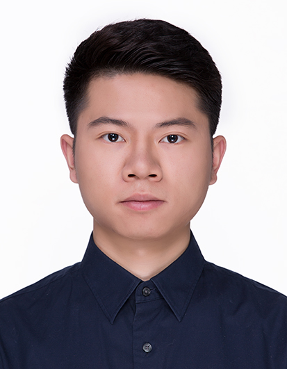

|  |
Changqian YuPh.D. CandidateSchool of Artificial Intelligence and Automation Email: changqian_yu [at] hust.edu.cn
|
Biography {CV}
I am a second-year Ph.D. student majoring in Computer Vision at Huazhong University of Science and Technology, supervised by A.P. Changxin Gao and Prof. Nong Sang. I received the China National Scholarship in 2018. Before that, I received my B.S. degree from Shandong University in 2016.
I interned at Visual Computing Group, Microsoft Research Asia as Research Intern supervised by Dr Jingdong Wang. Prior to that I was a visiting student at the Australian Institute for Machine Learning of the University of Adelaide, supervised by Prof. Chunhua Shen. Before that, I was a research intern at Megvii(Face++) Research for two years mentored by Dr Gang Yu and supervised by Dr Jian Sun.
My research interests focus on Computer Vision and Artificial Intelligence, specifically on the topic of Segmentation.
News
- [Dec. 2019] I join Visual Computing Group, Microsoft Research Asia as a Research Intern, supervised by Dr Jingdong Wang.
- [Oct. 2019] Our paper GTNet is accepted to AAAI2020 in New York, New York.
- [Jun. 2019] I become a visiting student at the Australian Institute for Machine Learning of the University of Adelaide, supervised by Prof. Chunhua Shen.
- [Mar. 2019] Our paper OANet is accepted to CVPR2019 in Long Beach, California!
- [Jan. 2019] I have released the project TorchSeg which contains the source code of DFN and BiSeNet.
- [Sep. 2018] As a team member of Megvii(Face++) and R4D Team, we won the 1st place of COCO Panoptic Segmentation and Mapillary Panoptic Segmentation in the COCO & Mapillary Panoptic Segmentation Challenge 2018. I was invited to present at COCO & Mapillary Joint Workshop at ECCV2018 in Munich, Germany. [ChinaNews]
- [Jul. 2018] Our paper BiSeNet is accepted to ECCV2018 in München, Germany!
- [Apr. 2018] I have presented my poster on the Vision and Learning Seminar(VALSE2018) in Dalian, LiaoNing Province, China.
- [Feb. 2018] Our paper DFN is accepted to CVPR2018 in Salt Lake City, Ultah State!
- [Jul. 2017] I join Megvii (Face++) Research as a Research Intern. During the time, I mainly researched on the topic of Segmentation.
Publications {Google Scholar}
* below indicates equal contribution
- Context Prior for Scene Segmentation
Changqian Yu, Jingbo Wang, Changxin Gao, Gang Yu, Chunhua Shen, Nong Sang
IEEE Conference on Computer Vision and Pattern Recognition (CVPR), 2020.
- GTNet: Generative Transfer Network for Zero-Shot Object Detection
Shizhen Zhao, Changxin Gao, Yuanjie Shao, Lerenhan Li, Changqian Yu, Zhong Ji, Nong Sang
The Thirty-Fourth AAAI Conference on Artificial Intelligence (AAAI), 2020.
[Paper] - An End-to-End Network for Panoptic Segmentation
Huanyu Liu, Chao Peng, Changqian Yu, Jingbo Wang, Xu Liu, Gang Yu, Wei Jiang
IEEE Conference on Computer Vision and Pattern Recognition (CVPR), 2019.
[Paper] - BiSeNet: Bilateral Segmentation Network for Real-time Semantic Segmentation
Changqian Yu*, Jingbo Wang*, Chao Peng, Changxin Gao, Gang Yu, Nong Sang
European Conference on Computer Vision (ECCV), 2018.
[Paper][Code][Poster][ChinaNews] - Learning a Discriminative Feature Network for Semantic Segmentation
Changqian Yu, Jingbo Wang, Chao Peng, Changxin Gao, Gang Yu, Nong Sang
IEEE Conference on Computer Vision and Pattern Recognition (CVPR), 2018.
[Paper][Code][Poster][ChinaNews] - Graph-Based Scale-Aware Network for Human Parsing
Beibei Yang, Changqian Yu, Jiahui Liu, Changxin Gao, Nong Sang
Chinese Conference on Pattern Recognition and Computer Vision (PRCV), 2019.
[Paper] - Spatially Attentive Correlation Filters for Visual Tracking
Huai Qin, Zhixiong Pi, Changqian Yu, Changxin Gao, Jin-Gang Yu, Nong Sang
IEEE International Conference on Image Processing (ICIP), 2018.
[Paper] - Center-Level Verification Model for Person Re-identification
Ruochen Zheng, Yang Chen, Changqian Yu, Chuchu Han, Changxin Gao, Nong Sang
Chinese Conference on Pattern Recognition and Computer Vision (PRCV), 2018.
[Paper]
Experience
- Visual Computing Group, Microsoft Research Asia, Beijing, ChinaDec. 2019 – Mar. 2020
Research Intern
Mentor: Dr Jingdong Wang
- Australian Institute for Machine Learning, University of Adelaide, AustraliaJun. 2019 – Sep. 2019
Visiting Ph.D. Student
Advisor: Prof. Chunhua Shen
- Detection Team, Megvii(Face++) Research, Beijing, ChinaJul. 2017 – Jun. 2019
Research Intern
Mentor: Dr Gang Yu
Supervisor: Dr Jian Sun
Academic Competetion
- Winner of COCO 2018 Challenge in Panoptic Segmentation Track2018
- Winner of Mapillary 2018 Challenge in Panoptic Segmentation Track2018
- No.5 of Scene Understanding Challenge for Autonomous Navigation in Unstructured Environments2018
- No.2 of Momenta Lane Detection Challenge2018
Honors & Awards
- "Hewang" Electric Excellence Scholarship, Huazhong University of Science and Technology2019
- National Scholarship, Ministry of Education of P.R. China2018
- Merit Student, Huazhong University of Science and Technology2018
- "Hewang" Electric Excellence Scholarship, Huazhong University of Science and Technology2018
- Graduate Knowledge and Excellence Scholarship, Huazhong University of Science and Technology2017
- Second Class Prize, National University Student Social Practice and Science Contest on Energy Saving & Emission Reduction2015
- Outstanding Student Cadre, Shandong University2014
- Innovative Entrepreneurial Activities Advanced Individuals, Shandong University2014
- First Class Prize, "RoboCup" Open Finals and China Robot Competition2014
- Second Class Prize, National College Students Innovation and Entrepreneurship Training Program2014
- Second Class Prize, Shandong Province College Students "TI Cup" Electronic Design Competition2014
- “Weichai Power” Scholarship, Shandong University2013
Professional Activities
- Conference Reviewer:
IEEE Conference on Computer Vision and Pattern Recognition (CVPR) 2019.
IEEE International Conference on Computer Vision (ICCV) 2019.
Thirty-Fourth AAAI Conference on Artificial Intelligence (AAAI) 2020.
IEEE/CVF Conference on Computer Vision and Pattern Recognition (CVPR) 2020.
European Conference on Computer Vision (ECCV) 2020.
- Microsoft Research Asia (MSRA) VCG talk: “Context in Semantic Segmentation”, 2019
- ECCV2018 COCO & Mapillary Joint Workshop talk: “MSCOCO & Mapillary Panoptic Segmentation Challenge 2018”, 2018